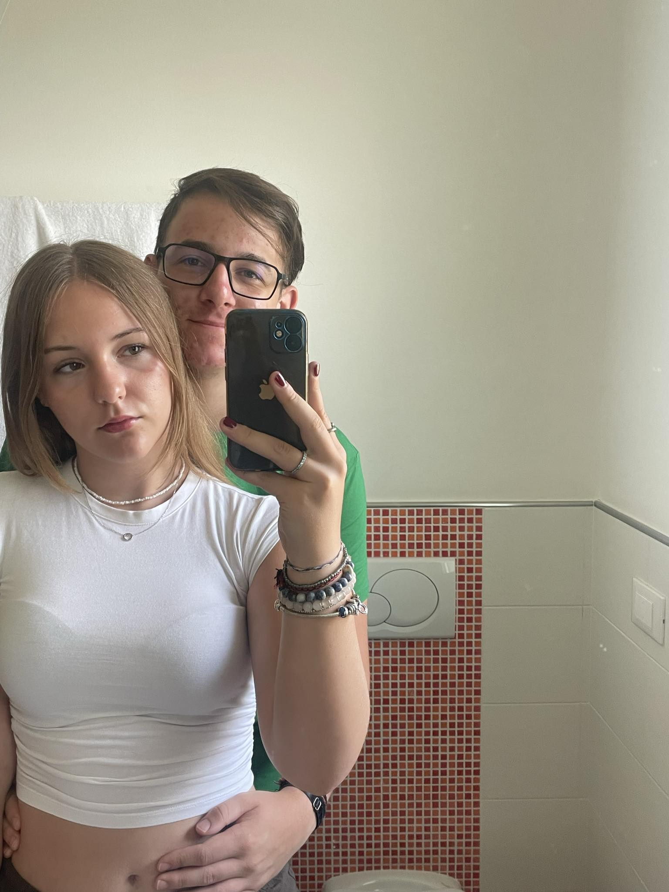
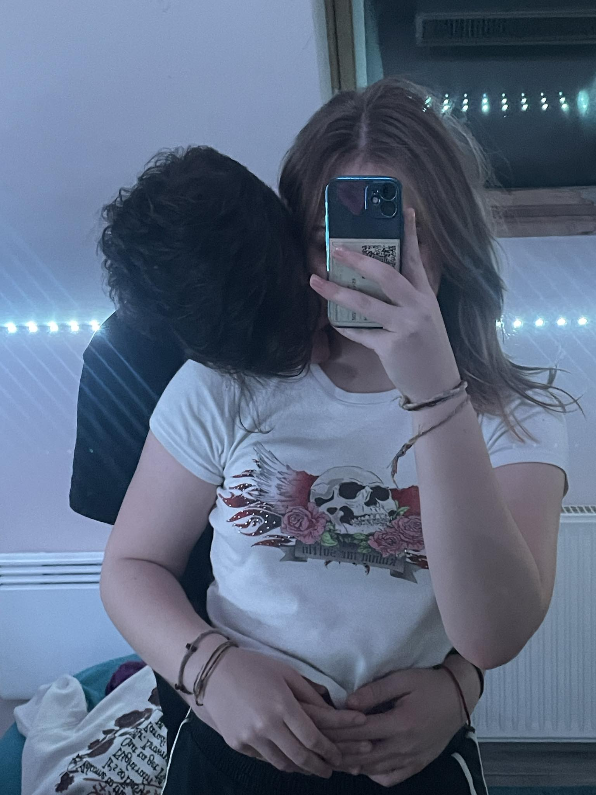

Kedves Szívem...
Úgy néz ki eljött ez is. Ez, ami felfoghatatlannak tűnt '23 októberében. Odáig voltam, meg vissza akkor amikor barátnőm lett, mert nem bírtam elhinni hogy tényleg van barátnőm, ráadásul te. Aztán teltek a hónapok és egyre mélyült bennem a gondolat, hogy mi igenis együtt leszünk sokáig, legyen távkapcsolat vagy sem.
Szóval igen, egy éve együtt vagyunk és még sokat kívánok nekünk. Sokan állítanak össze albumokat, nyomtatnak képeket. Szerettem volna én is egy kis nosztalgiát csinálni, de vittem bele egy "Páli féle csavart", így ezt a weboldalt csináltam meg. Lehet nem a legszebb, de remélem te is akkora örömmel nézed át az elmúlt közös évünket, mint én.
Éveink: